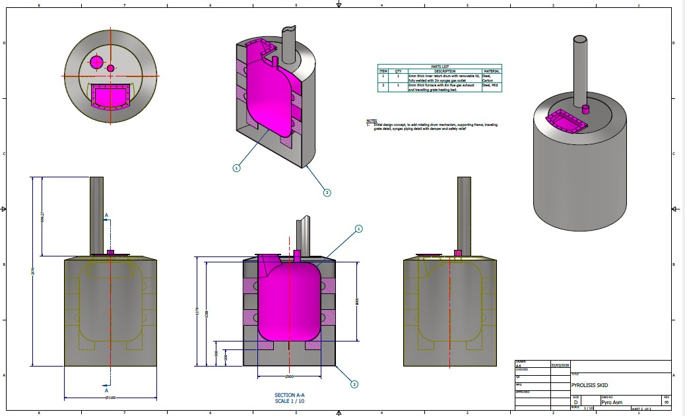
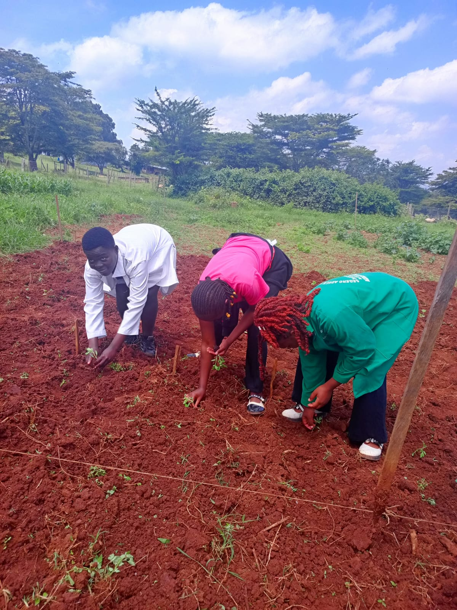
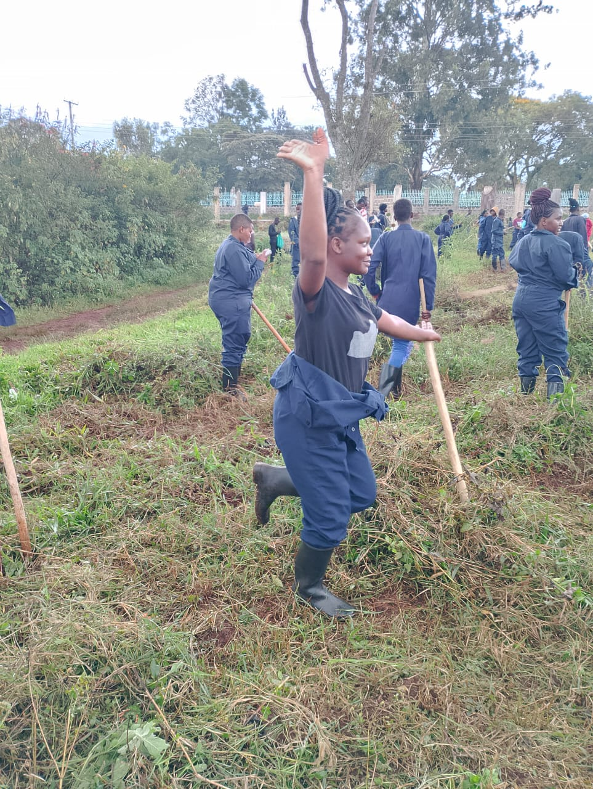
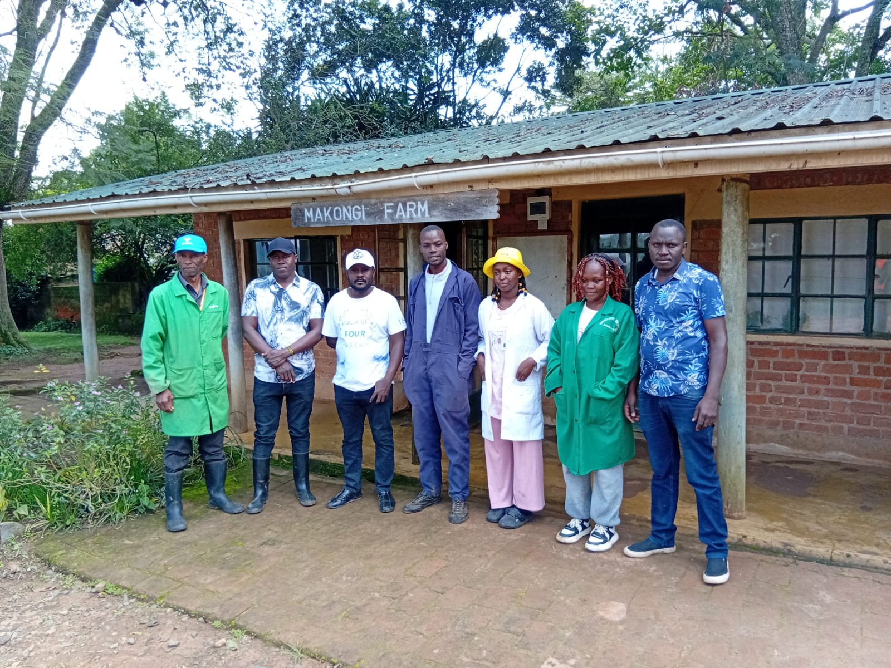

Vision: To turn organic waste into something useful (biochar) that helps farmers and protects the planet.
Engineered for sustainable, decentralized biochar production.
Our system utilizes a modular, skid-mounted batch pyrolysis system designed with a double drum retort configuration.

Section A-A: Internal view of the retort drum and furnace.
Estimate sequestration based on your specific feedstock type.
Our immediate milestones for validation and scaling.
Simulation of how carbon capture happens and overall quantification.
Test in the lab through pyrolysis and observe how carbon sequestration happens.
On-the-ground collaboration and scientific baseline testing.
To accurately assess the impact biochar has on soil, we have initiated baseline testing. The photos below highlight our control group: crops planted entirely without biochar. Their progress is being strictly monitored and recorded. In our next phase, these exact crops will be planted in biochar-enriched soil, allowing us to scientifically note and quantify all resulting agricultural improvements.



Interested in biochar adoption or partnership? Let's connect.